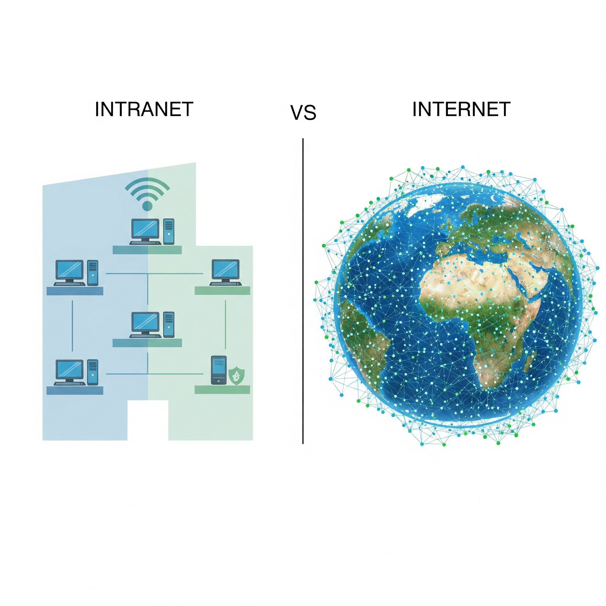

Web Applications
Introduction
Web applications are software programs that are accessed over the internet through a web browser hence the name Web Applications. These applications are hosted on a remote server and it is accessible through the browser. There are many common web application that is used by majorities daily; a few examples would be Google, Youtube, Instagram, Facebook, etc.
Database
In order for web applications to intereact with back-end databases, it has to go through server-side logics and API communications. Through those logics and communication, the web application sends requests to the backend database. Once processed, the back-end database then sends back the requested data to the web application.

Intranet VS Internet
There are major differences between internet and intranet in business usage. Internet is all about the public-facing systems like E-commerce: examples would be Amazon, Ebay, or other product stores websites. Intranet, on the other hand, is focused on internal usage within a company. A few examples of these would be employee portals, internal portals, and HR systems.
